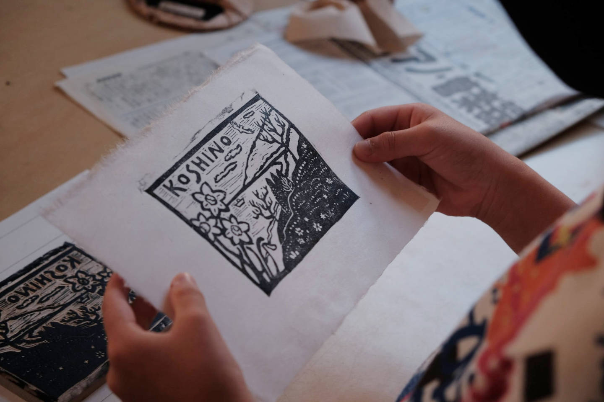
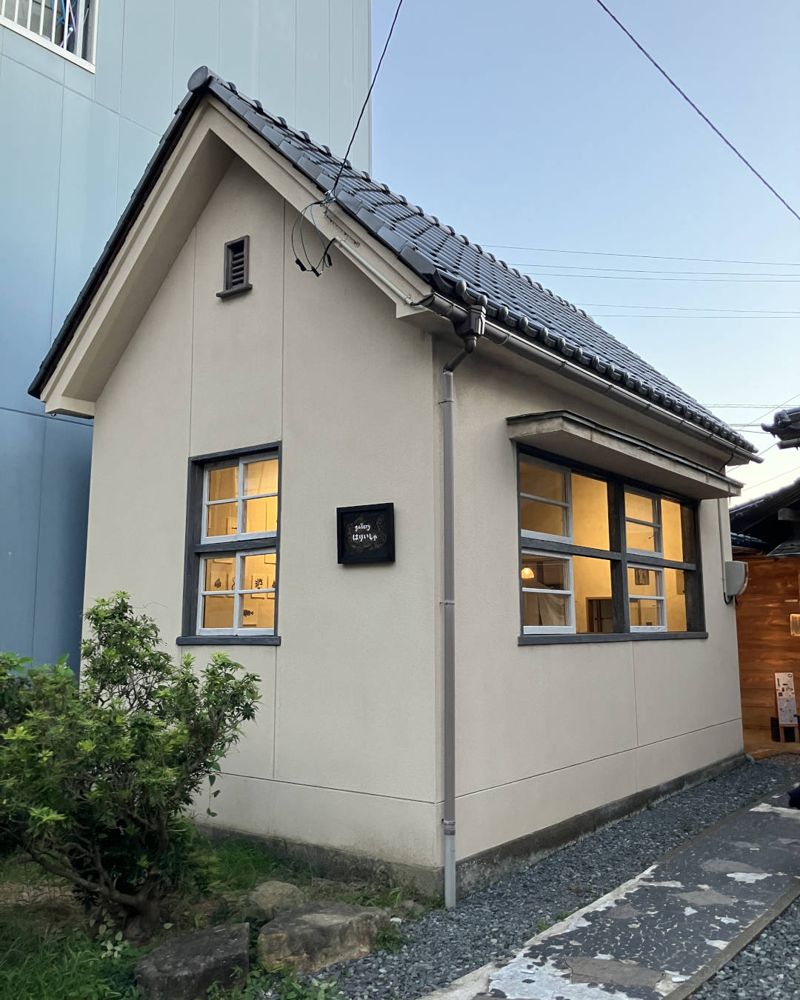
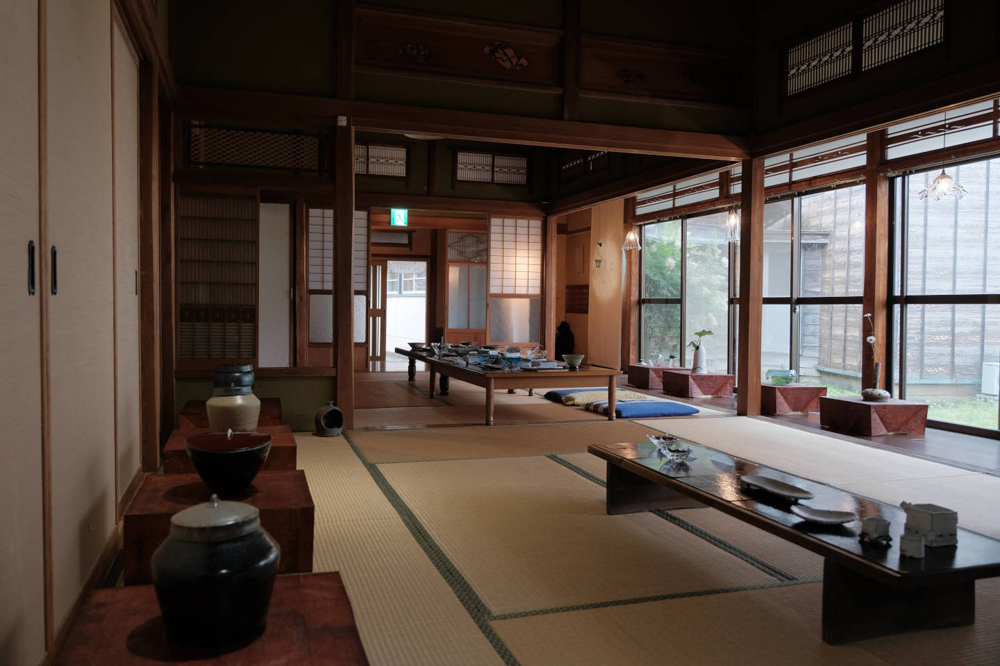
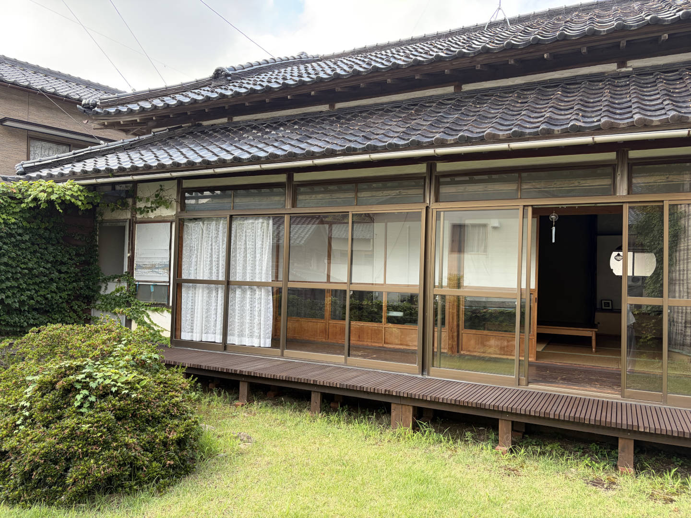
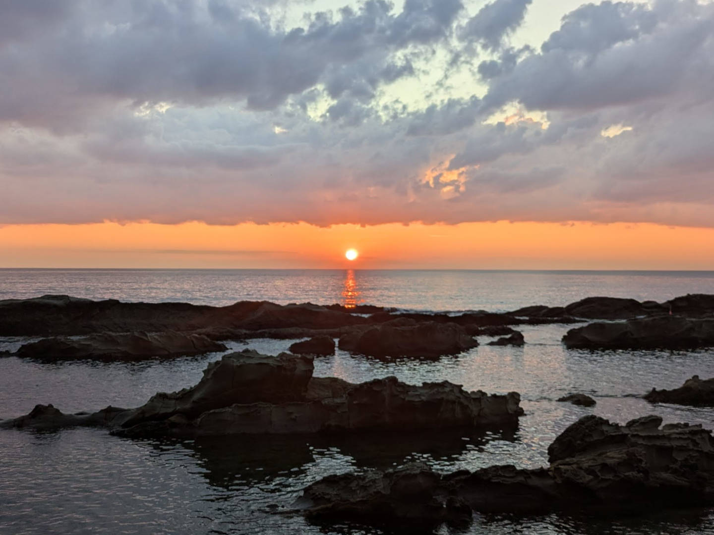
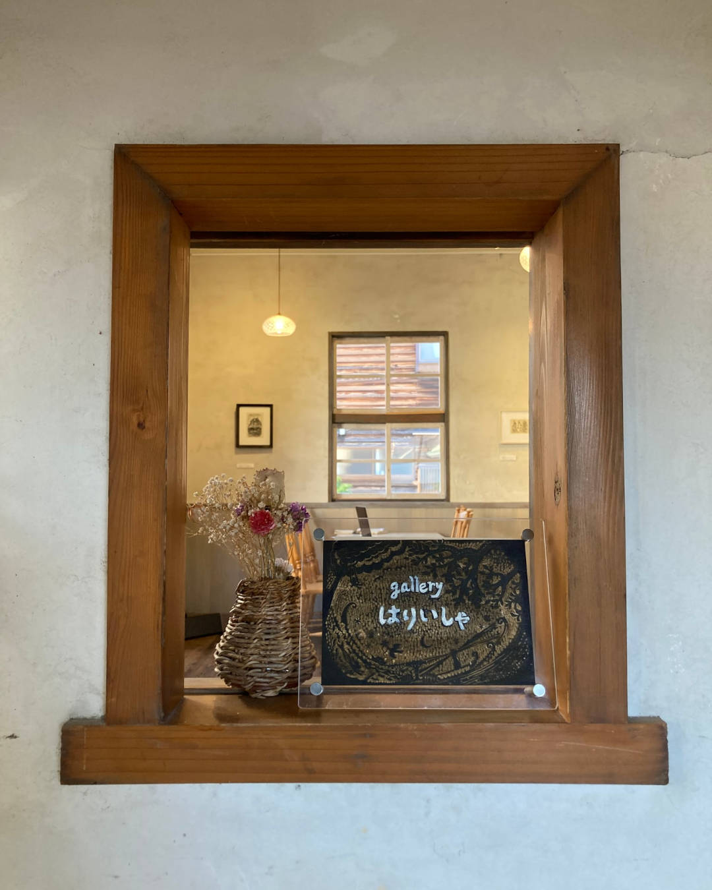

木版画の体験
滞在中に木版画の体験もできます。
海まで徒歩５分




旧街道に佇む、
昭和の手仕事が残る家。
福井市越前海岸の旧街道沿いにある古民家「はりいしゃ」。
日本建築の母屋に、西洋風の元鍼灸院が寄り添うように建っています。名前の由来は、この「はりいしゃ（鍼医者）」から。
板張りの床、引き戸のガラス窓、意匠を凝らした柱や建具。
地域の仲間たちがクラウドファンディングで資金を集め、自らの手で改修してきました。
定員は4名。海までは歩いて5分です。
昭和の手仕事が、
いまも息づく家。
畳の続き間、丸窓の向こうのダイニング、タイル張りのキッチン、職人の手による組子の欄間。
日本建築の母屋と元鍼灸院の洋館、それぞれの趣をお楽しみください。
| 基本料金（1〜2名） | 25,000円 |
|---|---|
| 夏休期・休祝日前日（1〜2名） | 30,000円 |
| 3名以降 1名追加ごと（時期問わず） | +5,000円 |
| 小学生 | 3,000円 / 名 |
| 未就学児（添い寝） | 無料 |
中学生以上は大人料金です。
ご宿泊の7日前からキャンセル料が発生します。あらかじめご了承ください。

滞在中に木版画の体験もできます。
日本海に沈む夕日、岩場の散歩、夏は越廼海水浴場へ。季節ごとに違う表情の海が、すぐそばにあります。
海辺の小さな展示室
gallery はりいしゃ
元鍼灸院の洋館を改装した展示室で、版画家のコレクションを常設展示しています。
ご宿泊以外のお客様のご来場は、完全予約制です。

越前の風土に触れ、
新しい文化の風を起こす。
「はりいしゃレジデンシー」は、越前の風土に触れ、地域の特色や魅力と向き合いながら、招聘作家に滞在制作・展示会を行って頂くプログラムです。発表する作品のジャンルは美術・工芸・音楽など、文化活動の域を問いません。滞在制作・展示会のご希望は当サイトのフォームから承ります。
海辺の古民家はりいしゃは「福井市越前海岸盛り上げ隊」が運営しています。「福井市越前海岸盛り上げ隊」は、ガラス作家、版画家、漁師、きこり、デザイナー、プログラマーなど、越前海岸エリアで事業を展開する異業種の仲間の集まりです。
ガラス作家。Uターンで越前海岸の地域振興に尽力。
版画家。はりいしゃのレジデンシー事業を担当。
デザイナー。レジデンシー事業の企画補助。
webエンジニア。当サイトの運営担当。
〒910-3553 福井県福井市蒲生町1-42
空き状況の確認やギャラリーのご来場予約は、フォームからお申込みください。